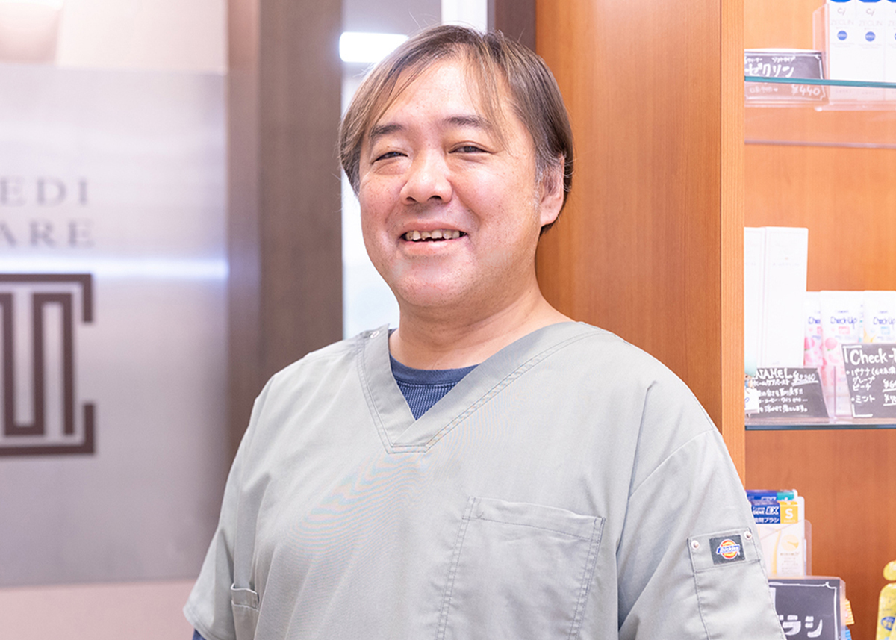

ドクター紹介DOCTOR

メディケア歯科クリニック 下妻
院長
齋藤 哲朗
Saito Tetsuro
患者様へのあいさつ
はじめまして、院長の齋藤です。
日々の診療において、こちらからの一方的な治療ではなく、患者様との話し合いを大切にし、
患者様に納得してもらった上で診療を受けて頂けるよう心掛けています。
経歴
- 2003年 奥羽歯科大学歯学部 卒業
患者さま満足度調査に
ご協力ください。
少しでも患者さまにとってより良い歯科医療を提供するため、 第三者機関に依頼して患者さま満足度調査を行っています。 率直なご意見をいただき、改善すべき点は真摯に受け止めていきたいと思っております。 当院には患者さまの個人情報は一切伝えられませんので、 是非、暖かいお言葉、おしかりのお言葉、たくさんお寄せください。